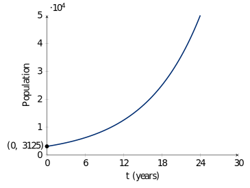

\[n(t)=n_02^{\frac{t}{a}}\]
\(n(t)\): population at time \(t\)
\(n_0\): inital population
\(2\): population doubles every period
\(a\): doubling time
\(t/a\): number of doubling periods in \(t\), \(t\) and \(a\) must be in the same unit.
Problem 1. A certain culture of the bacterium Streptococcus A initially has 10 bacteria and is observed to double every 1.5 hours.
Find an exponential model for the number of bacteria after \(t\) hours.
\(n_0=10\) and \(a=1.5\).
\(n(t)=10(2)^{t/1.5}\)
Estimate the number of bacteria after 35 hours.
\(n(35)=10(2)^{35/1.5}\approx 1.06\times 10^8\) A hundred million!
After how many hours the number of bacteria will reach 10,000? \[\begin{align*} 10000 & = 10(2)^{t/1.5}\\ 1000& = (2)^{t/1.5}\\ \log 1000 &= \log (2)^{t/1.5} \quad\text{(use common log b/c of base 10)}\\ 3 & = \frac{t}{1.5}\log\\ t &= \frac{4.5}{\log 2}\approx 14.9 \text{ hours} \end{align*}\]
Problem 2. A grey squirrel population was introduced in a certain county of Great Britain 30 years ago. Biologists observe that the population doubles every 6 years, and now the population is 100,000.
What was the initial size of the squirrel population?
\(a=6, t=30, n(30)=100,000\) \[\begin{align*} 100000 & =n_0(2)^{30/6} \\ 100000 & =32n_0\\ n_0 & = \frac{100000}{32}=3125 \end{align*}\]
Estimate the squirrel population 10 years from now.
\(n(t)=3215(2)^{t/6}\)
\(n(40)=3215(2)^{40/6}\approx 317,480\)
Sketch a graph of the squirrel population.
From doubling time to relative growth rate: \[\begin{align*} n_0 2^{t/a} & = n_0e^{rt}\\ 2^{1/a} & = e^r\\ r & = \ln 2^{1/a}=\frac{1}{a}\ln 2=\frac{\ln 2}{a} \end{align*}\]
\(r=\dfrac{\ln 2}{a}\) is called the relative growth rate, which means the population grows at this rate at any time.
\[n(t)=n_0 e^{rt}\] \(r=\dfrac{\ln 2}{a}\) if doubling time \(a\) is given.
Problem 3. The fox population in a certain region has a relative growth rate of 8% per year. It is estimated that the population in 2013 was 18,000.
Find a function \(n(t)\) that models the population \(t\) years after 2013.
\(n(t)=18000e^{0.08t}\)
Estimate the fox population in the year 2021.
\(n(8)=18000e^{0.08\cdot 8}\approx 34137\)
After how many years will the fox population reach 25,000?
\(25000=18000e^{0.08t}\)
\(\dfrac{25}{18}=e^{0.08t}\)
\(\ln \dfrac{25}{18}=0.08t\)
\(t=\dfrac{\ln(25/18)}{0.08}\approx 4.1 \text{ years}\)
Problem 4. The population of a certain city was 112,000 in 2014, and the observed doubling time for the population is 18 years.
Find an exponential model \(n(t)=n_02^{\frac{t}{a}}\) for the population \(t\) years after 2014.
\(n(t)=112000(2)^{t/18}\)
Find an exponential model \(n(t)=n_0e^{rt}\) for the population \(t\) years after 2014.
\(r=\ln 2 /a=\ln 2 /18\)
\(n(t)=112000 e^{(\ln 2/18)t}\)
Estimate how long it takes the population to reach 500,000.
\[\begin{align*} 500000 & =112000(2)^{t/18}\\ \frac{500}{112} & =2^{t/18}\\ \ln\frac{500}{112} & =\frac{t}{18}\ln 2\\ t& = \frac{18\ln\frac{500}{112}}{\ln 2}\approx 38.9 \text{ years} \end{align*}\]
\[m(t)=m_0 2^{-t/h} \quad \text{or}\quad m(t)=m_0 e^{-rt}\]
\(h\): half-life
The amount of the material becomes 1/2 of the initial amount after each period of half-life:
\(m(t)=m_0\left(\dfrac{1}{2}\right)^{t/h}=m_0 2^{-t/h}\)
\(r=(\ln 2)/h \implies m(t)=m_0 e^{-rt}\)
Problem 5. The half-life of radium-226 is 1600 years. Suppose we have a 22-mg sample.
Find a function \(m(t)=m_0 2^{-t/h}\) that models the mass remaining after \(t\) years.
\(m(t)=22(2)^{-t/1600}\)
Find a function \(m(t)=m_0 e^{-rt}\) that models the mass remaining after \(t\) years.
\(r= (\ln 2)/1600\)
\(m(t)=22e^{-\frac{\ln 2}{1600}t}\)
How much of the sample will remain after 4000 years?
\(m(4000)=22(2)^{-4000/1600}=22(2)^{-5/2}\approx 3.9 \text{ mg}\)
After how many years will only 18 mg of the sample remain? \[\begin{align*} 18& =22(2)^{-t/1600}\\ \frac{9}{11}&=(2)^{-t/1600}\\ \ln \frac{9}{11}&=\frac{-t}{1600}\ln 2\\ t& =-\frac{1600\ln \frac{9}{11}}{\ln 2}\approx 463.2 \text{ years} \end{align*}\]